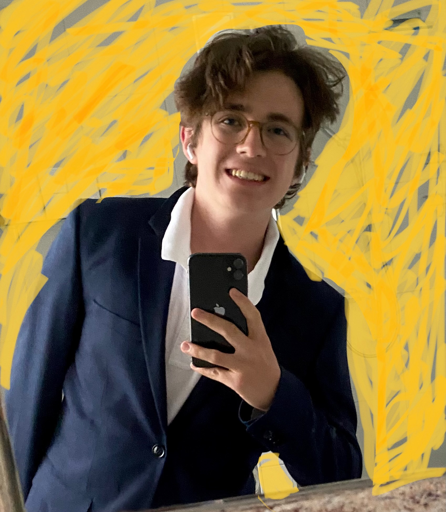
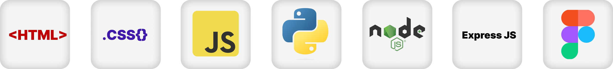

Ben Martin
Entrepreneur | Tech-Freak
About me
Passionate lifelong learner
Interested in Entrepreneurship and Tech
Self-taught Front-End Developer
Achievements
🥇 Winner Swiss Economics Olympiad 2022
🥉 Bronze Medallist International Economics Olympiad
2nd round qualifier Mathematics Olympiad
CFO & Co-founder at fairshaked.
Projects
Gymquiz
(Web Application to learn vocabulary). Developed together with Florin Bucherer.
MovieSearch, Web Application to search through TV Shows and Movies using the TV Maze API
Prescription mate: An app to digitalize prescribtions developed at BernHäckt.
My Portfolio
Various small games (you can find them
here
)
various smaller Projects (like cloning famous Web Apps)
Technologies I use

Contact me
LinkedIn
e-Mail
Phone